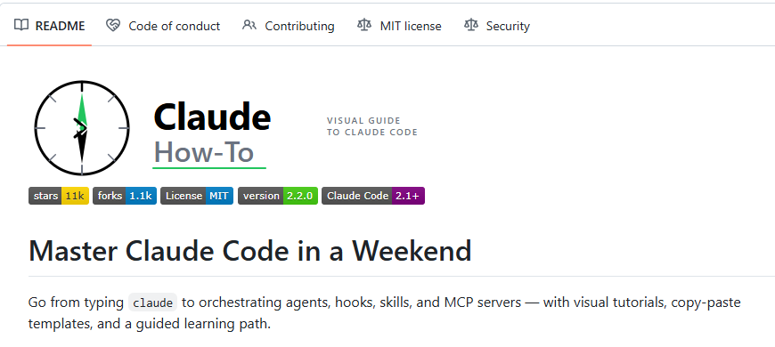

很多人装上 Claude Code 之后，第一反应都差不多：先跑几个提示词，觉得挺强；再往后，就有点卡住了。
不是不会用，是不知道“下一步该学什么”。官方文档当然有用，但更像功能手册。你能看到命令、参数、说明，却很难一下子建立起完整工作流：斜杠命令怎么配，CLAUDE.md 怎么写，记忆系统和技能怎么搭，什么时候该上 hooks，什么时候又该拆成 subagents。信息都在，但脑子里没有路。
我最近在 GitHub 上翻到一个还挺适合入门到进阶过渡的项目，叫 claude-howto。它不是那种把功能再复述一遍的资料，而是按学习顺序拆成了 10 个教程模块，从 slash commands、memory、skills 一路讲到 hooks、plugins、subagents，甚至还配了可直接复制的模板。对很多不想只停留在“对话式编程”的人来说，这种东西比单纯看文档有用得多。
这个项目有个细节我挺喜欢：它不只是告诉你“怎么配”，还会用 Mermaid 流程图把功能内部怎么运作画出来。这个差别其实很大。很多人学 Claude Code 学不下去，不是因为命令难，而是因为不知道这些机制在背后怎么串起来。一旦流程图看明白了，很多配置就不再像魔法，更像搭积木。
它还做了两件很实用的事。第一，给了现成模板，很多内容复制进去就能跑；第二，带了自测机制，可以直接跑 /self-assessment 或对应模块的小测，看看自己到底卡在哪。整套路线官方写的是 11 到 13 小时，但如果只是先上手第一个模板，README 里给的预期是 15 分钟就能开始。这个节奏就比较友好，不会一上来把人劝退。

说到底，Claude Code 真正值钱的地方，从来不是“陪你聊两句代码”。而是把命令、上下文、记忆、工具调用、代理协作这些东西接起来，变成一个能持续工作的环境。很多人差的不是能力，是缺一份像样的学习地图。这个仓库刚好补上了这块空白。
想认真把Claude Code 用出效率的，真可以顺着走一遍。第一遍跑通，你对它的理解，大概率就不是“会聊天的命令行”了。
GitHub地址：luongnv89/claude-howto